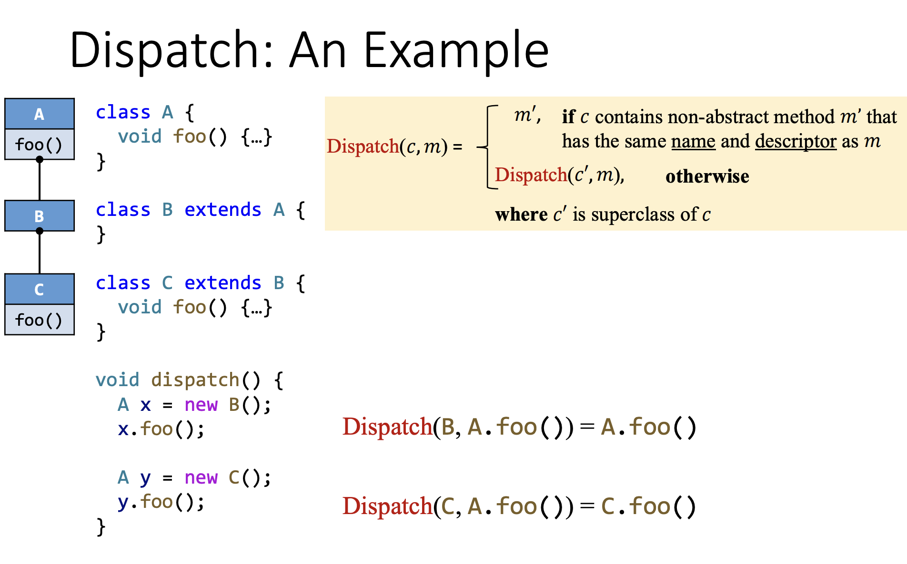
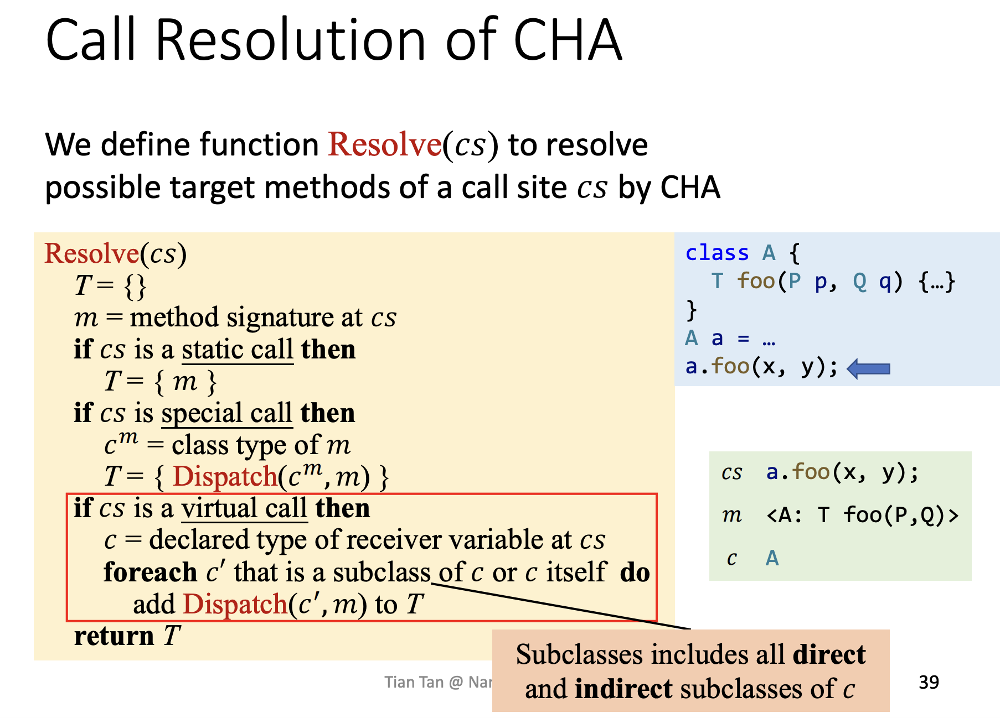
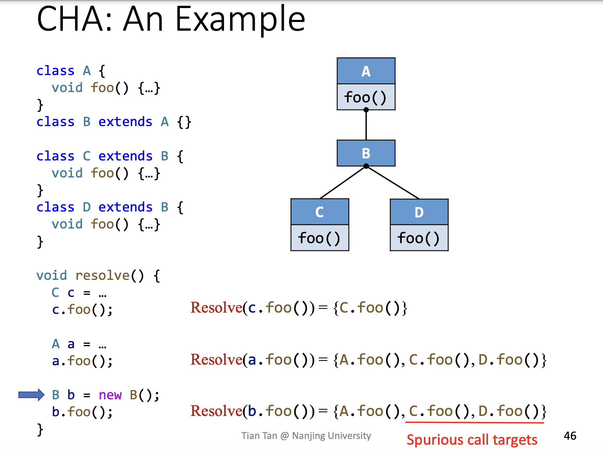
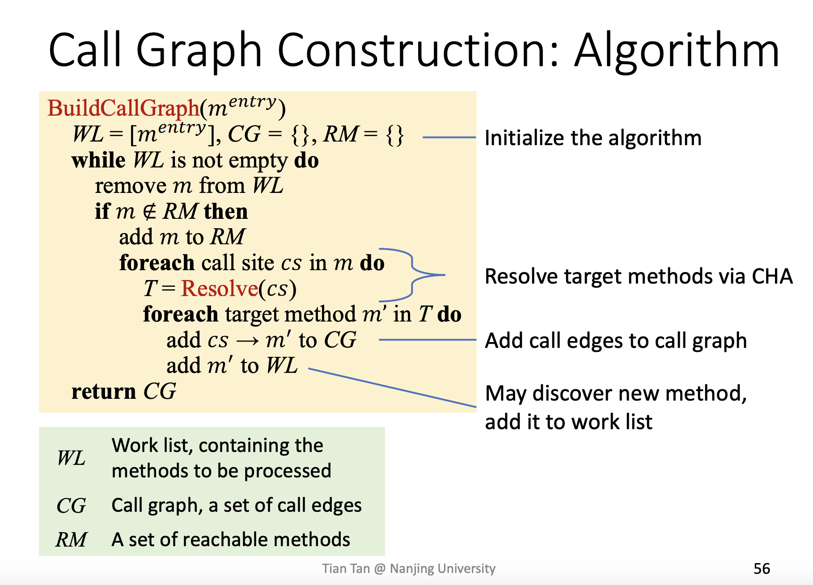
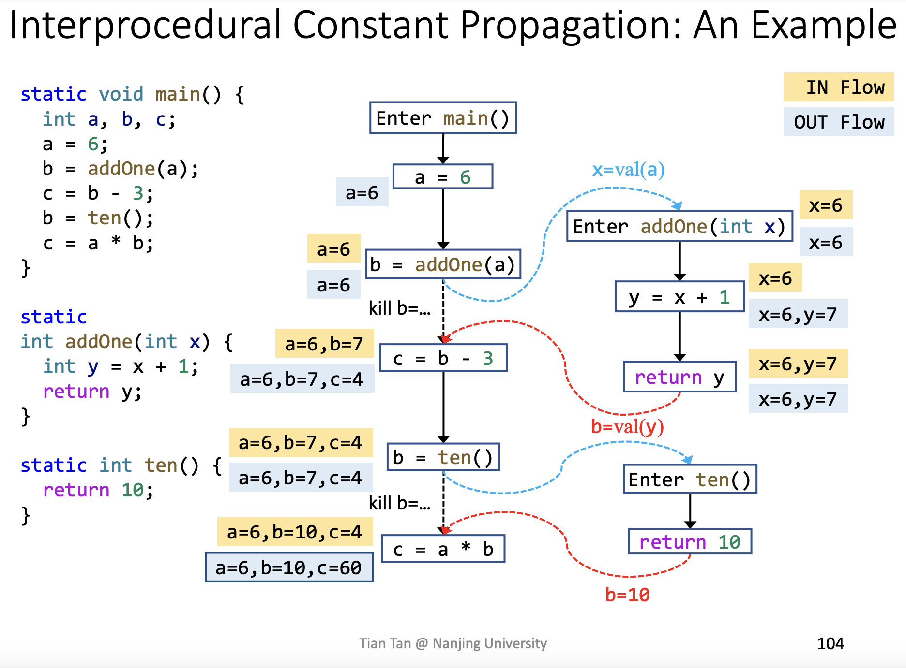

之前在做 Infraprocedural Analysis 时（lab2），将函数调用的返回值和函数的参数直接保守估计为了 NAC ， Interprocedural Analysis 的目标就是得到更高的分析精度。为了实施过程间分析，需要首先得到程序的 调用图 Call Graph 。
调用图是一种由方法之间的调用关系组成的图，即由从 call sites 到 target methods(callees) 之间的边组成。构建调用图的常用算法有：
Class Hierarchy Analysis (CHA)
Rapid Type Analysis (RTA)
Variable Type Analysis (VTA)
Pointer Analysis (k-CFA)
这些算法从上到下越来越精确，但是也越来越慢。
Java 中方法调用分为三类：
Static Call, invokestatic ，即调用某个类的静态方法，不需要 instance 即可调用，可在编译期确定目标方法
Special Call, invokespecial ， 包括调用 类的构造函数 、 instance 的私有方法 、 父类的方法 这三种，可以在编译期确定目标方法
Virtual Call, invokeinterface/invokevirtual ， 调用其他 instance 方法均属于该类型，可能有多个目标方法（多态），只能在运行期间确定目标方法。
前两类调用都很简单，因此构造调用图的关键在于 Virtual Call 。
在运行期间， Virtual Call $o^1.foo^(\dots)^2$ 根据以下两个信息被解析：
$o$ 指向的对象的类型
call site 的方法签名(Signature)
其中，
签名 Signature = 类名 Class Type + 方法名 Method Name + 描述符 Descriptor
描述符 Descriptor = 返回值类型 Return Type + 参数类型 Parameter Types
如：
class C {
T foo(P p, Q q, R r) { … }
}
该方法的签名为 $
一个签名可以唯一确定一个方法。
当解析一个 Virtual Call 时，采用以下分配函数 $Dispatch$ 来决定其调用的目标方法：
例：

根据 receiver variable 的声明类型和类之间的继承关系来求解 callees 。该算法假设声明类型为 $A$ 的变量可以指向 $A$ 及 $A$ 的所有子类（包括子类的子类）类型的变量。
具体算法如下：

对于 Static Call ，可以立即得到其调用的目标方法
对于 Special Call ，实例的私有方法和构造函数均可直接得到目标方法；而调用父类方法时需要对父类进行 Dispatch ， 因为可能父类中对应的方法也继承自它的父类。为了统一这两种情况，于是均对 $c^m$ 进行 Dispatch ， 前一种情况的 $c^m$ 即为该类自己，后一种情况的 $c^m$ 为其父类。
对于 Virtual Call ，由于假设其可以指向其自身以及其所有子类的类型，所以需要对 其自身和所有子类 均进行 Dispatch ，可能会得到多个目标方法。
如下图所示：

对于图中的 $b$ ，即使已经确定了它的类型是 $B$ ，即它的目标方法只会有 $A.foo()$ ，但是 CHA 仍然认为其可能的目标方法包括 $A.foo(),C.foo(),D.foo()$ ，因为 CHA 只关注变量的声明类型，而不关注其真实类型。 在解析 $b$ 时，会对它的声明类型 $B$ 和 $B$ 的所有子类 $C,D$ 进行 Dispatch ，最终得到结果。
有了解析目标方法的算法后，就可以开始构建调用图了。其算法如下：

该算法较为简单，只需要从 call site 向其所有的 target methods 连边。被该算法处理过的方法会被加入 Reachable Methods 集合中，即在程序运行过程中可能会执行到的方法。
CFG 表示单个方法内部的结构，而 ICFG 表示整个程序的结构。 ICFG 由多个 CFG 和 CFG 之间的调用/返回边 Call/Return Edges 构成。其中，调用边从 call site 指向目标方法的 entry ，而返回边从目标方法的 exit 指向调用语句的下一条语句 return site 。
虽然有了从 call site 到被调用方法 和 从被调用方法到 return site 的边，已经可以将程序的结构表示出来了，但是我们还需要加上从 call site 到 return site 的边，以方便 local data flow 的传递，具体将在下一节解释。
过程间数据流分析在 ICFG 上进行，除了需要用到 Node Transfer Function 以外，还需要 Edge Transfer Function 在调用和返回时传递数据流。
Call Edge Transfer: 从 call site 到 callee 的 entry 传递参数
Return Edge Transfer: 从 callee 的 exit 到 return site 传递返回值
此外，在 Node Transfer Function 中，若涉及到 $a=functionCall()$ ，则需要将 $a$ 从其 OUT 中 kill 掉，以防止其和 Return Edge Transfer 的结果冲突（实际上Node Transfer 的结果应该被 Return Edge Transfer 的结果覆盖掉）。
例：

图中的虚线即 call-to-return edge ，这种边的存在使得本地的数据流可以不必绕着 callee 转一圈再回到 return site ，而是直接从 call site 传递到 return site ，可以提高分析效率。
此外，在 $b=ten()$ 的 Node Transfer 中，若不 kill 掉 $b$ ，则其 OUT $b=7$ 和 Return Edge Transfer 的结果 $b=10$ 将会冲突，导致将 $b$ 分析为 NAC ，但实际上 $b=7$ 的结果会被 $b=10$ 覆盖，因此需要 kill 掉。